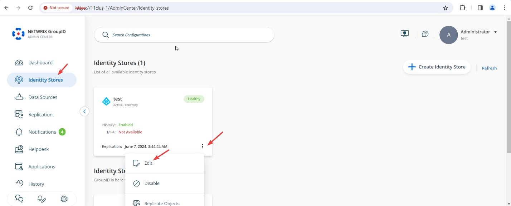
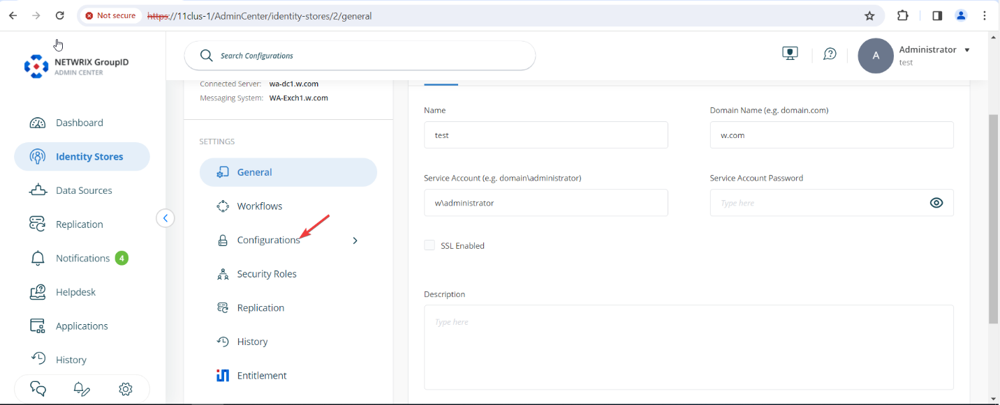
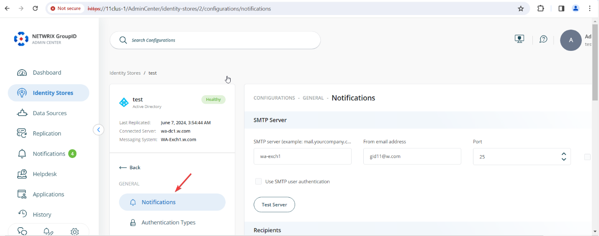
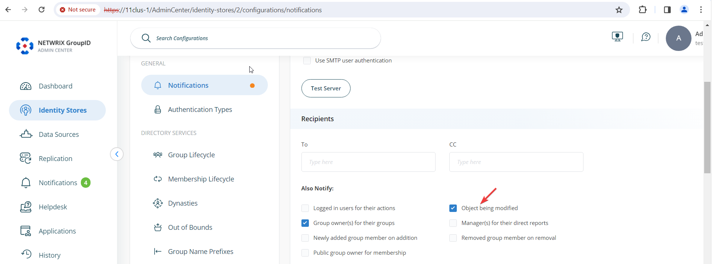
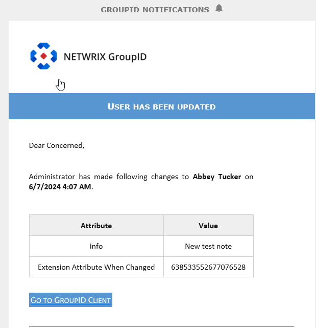

Applies To
Directory Manager 11
Overview
You can configure Netwrix Directory Manager (formerly GroupID) 11 to automatically send an email notification to a group, user, or contact whenever their profile is modified through the portal. To enable this feature, update the notification settings in the identity store.
When the Object being modified option is enabled, the following occurs:
- For a group, group members are notified of changes.
- For a user or contact, the individual is notified about changes to their profile.
Notifications are generated for events such as group renewal, expiry policy changes, membership changes, property or attribute modifications, and updates made by scheduled jobs.
NOTE: An SMTP server must be configured for the identity store for notifications to be sent.
Instructions
-
In Directory Manager Admin Center, select Identity Stores. For your
identity store, click the three dots (...) and select
Edit.
 -
On the next page, click Configurations.
 -
Click Notifications.
 -
Under the Also Notify option, select the checkbox for
Object being modified.
 - Scroll down and click the Save button.
Impact
For example, if an administrator changes the Notes field of a user account in Active Directory, the user whose account was modified will receive an email notification about the change.
